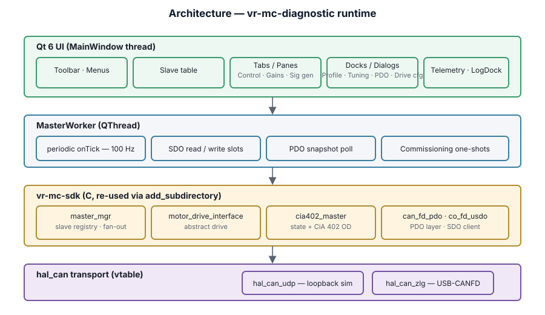

The diagnostic is a standalone Qt 6 desktop application that reads and
writes CiA 402 motor drives over a hal_can transport
(UDP-multicast for loopback / bench work, ZLG USB-CANFD for real
drives). It wraps the master_mgr +
motor_drive_interface C layers from vr-mc-sdk
in a dedicated Qt worker thread, surfaces live TPDO telemetry in a
QtCharts scope, and exposes every commissioning knob through
modeless dialogs that can sit next to the main window while the
operator works.

MasterWorker owns the master stack on its own QThread and communicates via queued signals/slots.The layering is intentional:
master_mgr_t, runs the periodic refresh, and performs all SDO read/write work. Emits a snapshot signal at 100 Hz.master_mgr fans out to per-slave motor_drive_interface; the CiA 402 implementation talks to co_fd_usdo (SDO) and can_fd_pdo (PDO) over a hal_can vtable.hal_can_udp or hal_can_zlg concrete, chosen at connect time.Qt::QueuedConnection.
No raw pointer handoffs, no shared-state races. Even the periodic
refresh grabs the worker's mutex, so an Apply press and a refresh
tick serialise naturally.
hal_can_udp uses BSD sockets + multicast; hal_can_zlg loads libcontrolcanfd.so.git clone …/vr-hand cd vr-hand/vr-mc-diagnostic cmake -S . -B build cmake --build build --target vr_mc_diagnostic -j ./build/vr_mc_diagnostic
The SDK ships a CiA 402 simulator you can use to bring the diagnostic up without a real drive. Run it in one terminal, then launch the diagnostic in another:
./vr-mc-sdk/build/app/motor_drive_cia402 --udp --node 5 ./vr-mc-diagnostic/build/vr_mc_diagnostic --auto-connect
The simulator emits TPDO1 at 2 kHz on multicast
239.192.0.42:23400; --auto-connect wires the
diagnostic to the same group and pulls up node id 5.
From the menu: Connection → Connect…. From the
keyboard: Ctrl+K. The dialog offers two transports:
| Transport | Fields | When to use |
|---|---|---|
| UDP multicast | Group (239.192.0.42), Port (23400) |
Loopback against the motor_drive_cia402 simulator, multi-host bench. |
| ZLG USB-CANFD | Channel index, arbitration bitrate, data-phase bitrate | Real drives on a USB-CANFD adapter. |
Both transports take First node id and
Count. The diagnostic sequentially registers that
range of slaves into master_mgr, each gaining a row in
the table.
Ctrl+R) replays the last
config without re-opening the dialog.

cia402-node-5 is registered and online; the log confirms PDO traffic (rx=66, statusword=0x0250).Left to right, the toolbar is grouped by intent:
Space.One row per slave. Columns: idx · id · name · state · online · pos · vel · trq. Selecting a row routes it to every per-slave panel — Control, Gains, Signal gen, Telemetry, and the dialogs that need a target.
Drives the CiA 402 state machine. Each button issues a controlword transition through master_mgr_*_one:

Mode selector picks none · torque · velocity ·
position; Setpoint sends the numeric target. Both
route through master_mgr_set_target_one.

Three loops (current · velocity · position) with independent Kp and Ki entry. Reads round-trip through motor_drive_intf_get_gain; writes go through motor_drive_intf_set_gain.

Profile, Tuning, and PDO map are created as QDockWidgets — hidden and floating by default so the main window stays uncluttered. Clicking their toolbar button (or the View menu entry) surfaces the dock; the operator can float or re-dock it to any edge of the main window.

Edit… opens a modal form editor. File → Save Profile persists to JSON.


Drive → Configure Drive… (Ctrl+Shift+C) opens a modeless tabbed dialog targeted at the currently-selected slave. The dialog kicks off an SDO read on open so the form reflects what's on the drive, not a blank default.

| Field | OD | Notes |
|---|---|---|
| Method | 0x6098 | Combobox with standard CiA 402 methods (0, 1, 2, 7, 11, 17, 18, 23, 27, 33–35, 37, −1, −2). |
| Home offset | 0x607C | Origin shift applied by the drive after homing completes. |
| Switch search speed | 0x6099:1 | Fast approach until a switch / limit edge is detected. |
| Zero search speed | 0x6099:2 | Slow creep onto the actual zero (index / hard stop). |
| Homing acceleration | 0x609A | Ramp to the search speeds. |
Two commissioning one-shots live below the form:
0x6060, then pulses controlword bit 4 on 0x6040 (0x000F → 0x001F). Status banner decodes statusword bits 10, 12, 13 live.0x6064), writes it into home_offset (0x607C), and updates the form field so Apply will persist it.
0x60810x60830x60840x6085These set the trapezoidal profile the drive uses when it moves under Profile Position / Profile Velocity modes (CiA 402 modes 1 / 3). Quick-stop decel is what the drive uses when E-STOP issues controlword 0x02.
0x6065 (counts); faults the drive if position error exceeds it.0x6066 (ms); how long the error has to persist.0x607D:1,2; hard software travel limits.0x6080 (counts/s).0x6072 (‰ of rated).Zero torque here reads torque_actual (0x6077) and writes it into torque_offset (0x60B2). Lets the current loading read as zero — useful when taring against gravity.
0x608F:1 (counts per revolution).0x6091:1,2.0x6092:1,2.
Ctrl+K). Pick transport, set node range, Connect. Confirm the row in the table turns online = yes.Space
(E-STOP) the first time you enable a new drive. The diagnostic has no
opinion about your mechanics — if limits aren't set right, motion can
escape the safe envelope within a control cycle.
The diagnostic's PDO layer uses two hal_can endpoints — one for SDO, one for PDO. Keeping them separate avoids the single-consumer hal_can_set_cb from shadowing either traffic:

Editing the mapping happens via the PDO map dock:
bit_length / 8 bytes to the frame.
0x1600 / 0x1A00 and friends) are
not exposed, so the remap aborts per-step with SDO abort code
0x06020000. The log surfaces the per-step reason. On a
real CiA 402 drive the sequence completes and TPDO layout changes
take effect on the next PDO emission.
Ctrl+Shift+R) — toggled from the Data menu or toolbar. Currently a placeholder that writes to the log; CSV-per-snapshot is the planned evolution.The large red E-STOP button is pinned to the right of the toolbar and is always clickable. Shortcut Space is application-wide — it fires even when a setpoint spin box or name field has focus. On click:
master_mgr_disable_all walks every slave into Switch-On Disabled (via controlword 0x00).Re-enabling a slave after E-STOP is just the normal Bringup → Enable sequence on the Control tab.
| Combo | Action |
|---|---|
Ctrl+K | Connect… |
Ctrl+R | Reconnect (replay last config) |
Ctrl+E | Edit motor profile |
Ctrl+Shift+C | Configure Drive… |
Ctrl+Shift+R | Toggle telemetry recording |
Ctrl+O | Open profile… |
Ctrl+S | Save profile |
Space | E-STOP (application-wide) |
F1 | Documentation |
| Symptom | Likely cause | Check |
|---|---|---|
| Configure Drive: "all fields aborted" | Drive doesn't expose the CiA 402 config objects (simulator, minimal drives). | Use a real drive, or leave the dialog for display only. |
CO_FD_USDO_CLIENT: Session timeout |
Drive not responding. Wrong node id, bus down, transport mis-selected, or PDO callback eating SDO frames. | Verify node id, transport; check the two UDP sockets came up. |
PDO map Value column stays — |
No TPDO received — drive not emitting, COB-ID mismatch, or TPDO not enabled. | Log should show "PDO online" once per slave; if not, sniff the bus. |
| E-STOP disabled | Not connected yet — no slaves to disable. | Connect first; it lights up automatically. |
| Start Homing does nothing visible | Drive not in Operation Enabled before bit 4 pulse. | Hit Enable on Control first. |
| Floating dock disappeared | Window moved off-screen. | Toggle it from the toolbar / View menu to re-show. |
hal_can_udp)
The diagnostic opens two sockets per connection: one for SDO traffic,
one for PDO. Both bind 0.0.0.0:23400 on the loopback
interface with SO_REUSEADDR so they coexist in the same
process. Each socket joins the 239.192.0.42 multicast
group; IP_MULTICAST_LOOP stays on so other local sockets
see our sends. Every frame rides a 12-byte header:
[ sender_tag : 4 ][ cob_id : 4 ][ dlc : 1 ][ flags : 1 ][ rsvd : 2 ]
The sender tag filters self-echoes — each socket generates a random tag at create time.
hal_can_zlg)
libcontrolcanfd.so is opened via dlopen() at
runtime; the shared object ships in
src/backends/zlg/lib/ and is found through the RPATH.
One endpoint per channel; PDO is not yet wired on this transport
(V1 is SDO-only).
Objects the diagnostic reads or writes:
| Index | Sub | Field | Where |
|---|---|---|---|
0x1010 | 1 | Store parameters | Drive · Save to Flash (planned) |
0x1011 | 1 | Restore defaults | Drive · Load from Flash (planned) |
0x1400+n | 1 | RPDO comm — COB-ID | PDO remap · disable bit |
0x1600+n | 0..N | RPDO mapping | PDO mapping editor |
0x1800+n | 1 | TPDO comm — COB-ID | PDO remap · disable bit |
0x1A00+n | 0..N | TPDO mapping | PDO mapping editor |
0x603F | 0 | Error code | TPDO1 · PDO map |
0x6040 | 0 | Controlword | Control tab · Homing |
0x6041 | 0 | Statusword | TPDO1 · decoded in banners |
0x6060 | 0 | Mode of operation | Control tab · Homing |
0x6064 | 0 | Position actual | TPDO1 · Zero encoder here |
0x6065 | 0 | Max following error | Configure Drive · Protection |
0x6066 | 0 | Following error timeout | Configure Drive · Protection |
0x606C | 0 | Velocity actual | TPDO1 |
0x6072 | 0 | Max torque | Configure Drive · Protection |
0x6077 | 0 | Torque actual | TPDO1 · Zero torque here |
0x607A | 0 | Target position | RPDO1 |
0x607C | 0 | Home offset | Homing tab · Zero encoder |
0x607D | 1,2 | Position limits | Protection |
0x6080 | 0 | Max motor speed | Protection |
0x6081 | 0 | Profile velocity | Motion profile |
0x6083 | 0 | Profile acceleration | Motion profile |
0x6084 | 0 | Profile deceleration | Motion profile |
0x6085 | 0 | Quickstop deceleration | Motion profile |
0x608F | 1 | Encoder resolution | Encoder |
0x6091 | 1,2 | Gear ratio | Encoder |
0x6092 | 1,2 | Feed constant | Encoder |
0x6098 | 0 | Homing method | Homing tab |
0x6099 | 1,2 | Homing speeds | Homing tab |
0x609A | 0 | Homing acceleration | Homing tab |
0x60B2 | 0 | Torque offset | Zero torque here |
0x60FF | 0 | Target velocity | RPDO1 |
| Flag | Value | Purpose |
|---|---|---|
-a, --auto-connect | — | Connect with default config on startup. |
--quit-after | ms | Quit after N ms (headless smoke tests). |
--screenshot | path[:ms] | Grab the window to PNG after a delay. |
--show-panel | name | Open a dock / dialog (pdo-map, tuning, profile, drive-config). |
--show-tab | idx | Select a left-tab (0 Control, 1 Gains, 2 Signal gen). |
--only-dialog | — | With --screenshot: capture only the topmost dialog. |